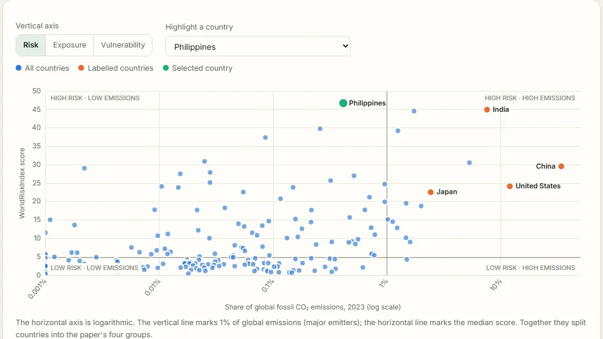

Climate policy · data analysis
Climate Justice in the Philippines
Plots disaster risk against emissions for 182 countries. The Philippines ranks first for risk yet emits about 0.4% of global fossil CO₂.
- Joins WorldRiskIndex 2024 with EDGAR emissions data
- Switch between risk, exposure and vulnerability
- Makes the case for climate finance after COP29
pandasOpen dataPolicy research